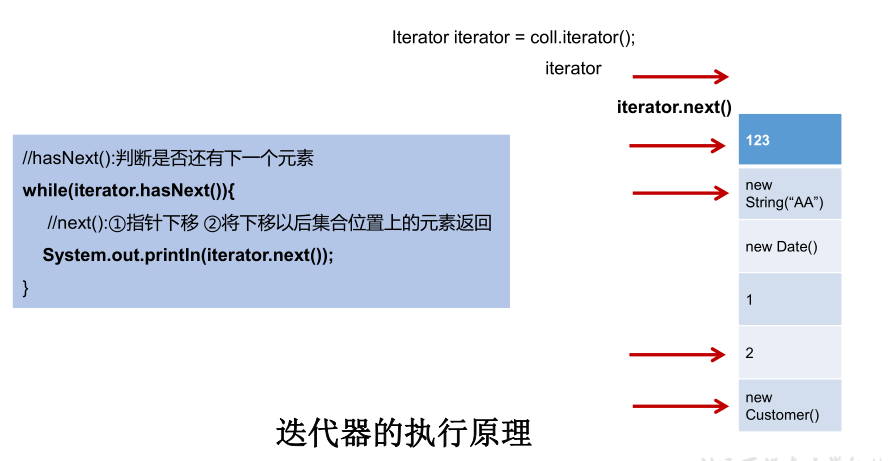
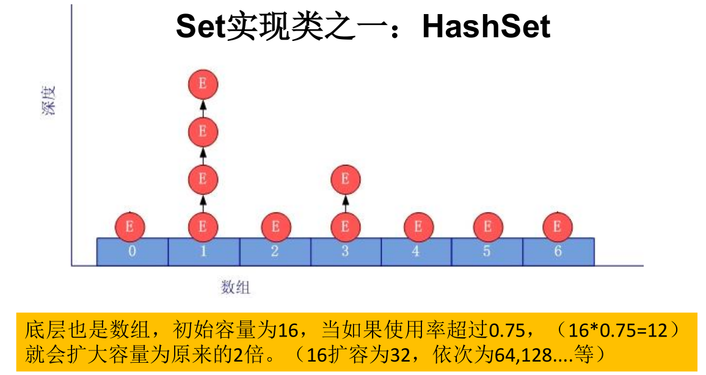

集合、数组都是对多个数据进行存储操作的结构，简称Java容器。
说明：此时的存储，主要指的是内存层面的存储，不涉及到持久化的存储（.txt,.jpg,.avi，数据库中）
数组在存储多个数据方面的特点：
|----Collection接口：单列集合，用来存储一个一个的对象
|----List接口：存储有序的、可重复的数据。 -->“动态”数组
|----ArrayList、LinkedList、Vector
|----Set接口：存储无序的、不可重复的数据
|----HashSet、LinkedHashSet、TreeSet
|----Map接口：双列集合，用来存储一对(key - value)一对的数据
|----HashMap、LinkedHashMap、TreeMap、Hashtable、Properties
public class CollectionTest {
@Test
public void test1(){
Collection coll = new ArrayList();
//add(Object e):将元素e添加到集合coll中
coll.add("AA");
coll.add("BB");
coll.add(123);//自动装箱
coll.add(new Date());
//size():获取添加的元素的个数
System.out.println(coll.size());//4
//addAll(Collection coll1):将coll1集合中的元素添加到当前的集合中
Collection coll1 = new ArrayList();
coll1.add(456);
coll1.add("CC");
coll.addAll(coll1);
System.out.println(coll.size());//6
System.out.println(coll);
//clear():清空集合元素
coll.clear();
//isEmpty():判断当前集合是否为空（集合中元素的个数，空不是指null）
System.out.println(coll.isEmpty());
}
}contains(Object obj):判断当前集合中是否包含obj。我们在判断时会调用obj对象所在类的equals()。
containsAll(Collection coll1):判断形参coll1中的所有元素是否都存在于当前集合中。
remove(Object obj):从当前集合中移除obj元素。
removeAll(Collection coll1):差集：从当前集合中移除coll1中所有的元素。
Collection coll1 = Arrays.asList(123,456);
coll.removeAll(coll1);
System.out.println(coll);retainAll(Collection coll1):交集：获取当前集合和coll1集合的交集，并返回给当前集合.
equals(Object obj):要想返回true，需要当前集合和形参集合的元素都相同。
hashCode():返回当前对象的哈希值。
集合 --->数组：toArray()
Object[] arr = coll.toArray();
for(int i = 0;i < arr.length;i++){
System.out.println(arr[i]);
}数组 --->集合:调用Arrays类的静态方法asList()。
List<String> list = Arrays.asList(new String[]{"AA", "BB", "CC"});集合元素的遍历操作，使用迭代器Iterator接口。
public class IteratorTest {
@Test
public void test1(){
Collection coll = new ArrayList();
coll.add(123);
coll.add(456);
coll.add(new String("Tom"));
Iterator iterator = coll.iterator();
while(iterator.hasNext()){ // hasNext判断是否还有下一个元素
System.out.println(iterator.next()); // next()：指针下移，将下移以后集合位置上的元素返回
}
}
@Test
public void test2(){
Collection coll = new ArrayList();
coll.add(123);
coll.add(456);
coll.add(new String("Tom"));
coll.add(false);
//删除集合中"Tom"
Iterator iterator = coll.iterator();
while (iterator.hasNext()){
Object obj = iterator.next();
if("Tom".equals(obj)){
iterator.remove();
}
}
//遍历集合
iterator = coll.iterator();
while (iterator.hasNext()){
System.out.println(iterator.next());
}
}
}
public class ForTest {
@Test
public void test1(){
Collection coll = new ArrayList();
coll.add(123);
coll.add(456);
coll.add(new String("Tom"));
coll.add(false);
//for(集合元素的类型 局部变量 : 集合对象)
//内部仍然调用了迭代器。
for(Object obj : coll){
System.out.println(obj);
}
}
@Test
public void test2(){
int[] arr = new int[]{1,2,4,7,3};
//for(数组元素的类型 局部变量 : 数组对象)
for(int i : arr){
System.out.println(i);
}
}
// 练习
@Test
public void test3(){
String[] str = new String[]{"AA", "AA", "AA"};
for(String s : str){
s = "BB";
}
for (int i = 0; i < str.length; i++) {
System.out.println(str[i]); // AA AA AA
}
}
}/**
* 1. List接口框架
*
* |----Collection接口：单列集合，用来存储一个一个的对象
* |----List接口：存储有序的、可重复的数据。 -->“动态”数组,替换原有的数组
* |----ArrayList：作为List接口的主要实现类；线程不安全的，效率高；底层使用Object[] elementData存储
* |----LinkedList：对于频繁的插入、删除操作，使用此类效率比ArrayList高；底层使用双向链表存储
* |----Vector：作为List接口的古老实现类；线程安全的，效率低；底层使用Object[] elementData存储
*
*
* 2. ArrayList的源码分析：
* 2.1 jdk 7情况下
* ArrayList list = new ArrayList();//底层创建了长度是10的Object[]数组elementData
* list.add(123);//elementData[0] = new Integer(123);
* ...
* list.add(11);//如果此次的添加导致底层elementData数组容量不够，则扩容。
* 默认情况下，扩容为原来的容量的1.5倍，同时需要将原有数组中的数据复制到新的数组中。
*
* 结论：建议开发中使用带参的构造器：ArrayList list = new ArrayList(int capacity)
*
* 2.2 jdk 8中ArrayList的变化：
* ArrayList list = new ArrayList();//底层Object[] elementData初始化为{}.并没有创建长度为10的数组
*
* list.add(123);//第一次调用add()时，底层才创建了长度10的数组，并将数据123添加到elementData[0]
* ...
* 后续的添加和扩容操作与jdk 7 无异。
* 2.3 小结：jdk7中的ArrayList的对象的创建类似于单例的饿汉式，而jdk8中的ArrayList的对象
* 的创建类似于单例的懒汉式，延迟了数组的创建，节省内存。
*
* 3. LinkedList的源码分析：
* LinkedList list = new LinkedList(); 内部声明了Node类型的first和last属性，默认值为null
* list.add(123);//将123封装到Node中，创建了Node对象。
*
* 其中，Node定义为：体现了LinkedList的双向链表的说法
* private static class Node<E> {
E item;
Node<E> next;
Node<E> prev;
Node(Node<E> prev, E element, Node<E> next) {
this.item = element;
this.next = next;
this.prev = prev;
}
}
*
* 4. Vector的源码分析：jdk7和jdk8中通过Vector()构造器创建对象时，底层都创建了长度为10的数组。
* 在扩容方面，默认扩容为原来的数组长度的2倍。
*
* 面试题：ArrayList、LinkedList、Vector三者的异同？
* 同：三个类都是实现了List接口，存储数据的特点相同：存储有序的、可重复的数据
* 不同：见上
*//**
增：add(Object obj)
删：remove(int index) / remove(Object obj)
改：set(int index, Object ele)
查：get(int index)
插：add(int index, Object ele)
长度：size()
遍历：① Iterator迭代器方式
② 增强for循环
③ 普通的循环
*/@Test
public void test3(){
ArrayList list = new ArrayList();
list.add(123);
list.add(456);
list.add("AA");
//方式一：Iterator迭代器方式
Iterator iterator = list.iterator();
while(iterator.hasNext()){
System.out.println(iterator.next());
}
//方式二：增强for循环
for(Object obj : list){
System.out.println(obj);
}
//方式三：普通for循环
for(int i = 0;i < list.size();i++){
System.out.println(list.get(i));
}
} /* Set接口的框架：
* |----Collection接口：单列集合，用来存储一个一个的对象
* |----Set接口：存储无序的、不可重复的数据
* |----HashSet：作为Set接口的主要实现类；线程不安全的；可以存储null值
* |----LinkedHashSet：作为HashSet的子类；遍历其内部数据时，可以按照添加的顺序遍历
* 对于频繁的遍历操作，LinkedHashSet效率高于HashSet.
* |----TreeSet：可以按照添加对象的指定属性，进行排序。底层为红黑树。
//*添加元素的过程：以HashSet为例：
我们向HashSet中添加元素a,首先调用元素a所在类的hashCode()方法，计算元素a的哈希值，
此哈希值接着通过某种算法计算出在HashSet底层数组中的存放位置（即为：索引位置），判断
数组此位置上是否已经有元素：
如果此位置上没有其他元素，则元素a添加成功。 --->情况1
如果此位置上有其他元素b(或以链表形式存在的多个元素），则比较元素a与元素b的hash值：
如果hash值不相同，则元素a添加成功。--->情况2
如果hash值相同，进而需要调用元素a所在类的equals()方法：
equals()返回true,元素a添加失败
equals()返回false,则元素a添加成功。--->情况2
对于添加成功的情况2和情况3而言：元素a 与已经存在指定索引位置上数据以链表的方式存储。
jdk 7 :元素a放到数组中，指向原来的元素。
jdk 8 :原来的元素在数组中，指向元素a
总结：七上八下
HashSet底层：数组+链表的结构。
*/
Set：存储无序的、不可重复的数据
以HashSet为例说明：
1. 无序性：不等于随机性。存储的数据在底层数组中并非按照数组索引的顺序添加，而是根据数据的哈希值决定的。
2. 不可重复性：保证添加的元素按照equals()判断时，不能返回true.即：相同的元素只能添加一个。向Set(主要指：HashSet、LinkedHashSet)中添加的数据，其所在的类一定要重写hashCode()和equals()
要求：重写的hashCode()和equals()尽可能保持一致性：相等的对象必须具有相等的散列码重写两个方法的小技巧：对象中用作 equals() 方法比较的 Field，都应该用来计算 hashCode 值。LinkedHashSet作为HashSet的子类，在添加数据的同时，每个数据还维护了两个引用，记录此数据前一个数据和后一个数据。
优点：对于频繁的遍历操作，LinkedHashSet效率高于HashSet。
LinkedHashSet插入性能略低于 HashSet，但是在迭代访问Set里的全部元素时有很好的性能。
package com.atguigu.java1;
import org.junit.Test;
import java.util.Comparator;
import java.util.Iterator;
import java.util.TreeSet;
public class TreeSetTest {
/*
1.向TreeSet中添加的数据，要求是相同类的对象。
2.两种排序方式：自然排序（实现Comparable接口） 和 定制排序（Comparator）
3.自然排序中，比较两个对象是否相同的标准为：compareTo()返回0.不再是equals().
4.定制排序中，比较两个对象是否相同的标准为：compare()返回0.不再是equals().
*/
@Test
public void test1(){
TreeSet set = new TreeSet();
//失败：不能添加不同类的对象
// set.add(123);
// set.add(456);
// set.add("AA");
// set.add(new User("Tom",12));
//举例一：
// set.add(34);
// set.add(-34);
// set.add(43);
// set.add(11);
// set.add(8);
//举例二：
set.add(new User("Tom",12));
set.add(new User("Jerry",32));
set.add(new User("Jim",2));
set.add(new User("Mike",65));
set.add(new User("Jack",33));
set.add(new User("Jack",56));
Iterator iterator = set.iterator();
while(iterator.hasNext()){
System.out.println(iterator.next());
}
}
@Test
public void test2(){
Comparator com = new Comparator() {
//按照年龄从小到大排列
@Override
public int compare(Object o1, Object o2) {
if(o1 instanceof User && o2 instanceof User){
User u1 = (User)o1;
User u2 = (User)o2;
return Integer.compare(u1.getAge(),u2.getAge());
}else{
throw new RuntimeException("输入的数据类型不匹配");
}
}
};
TreeSet set = new TreeSet(com);
set.add(new User("Tom",12));
set.add(new User("Jerry",32));
set.add(new User("Jim",2));
set.add(new User("Mike",65));
set.add(new User("Mary",33));
set.add(new User("Jack",33));
set.add(new User("Jack",56));
Iterator iterator = set.iterator();
while(iterator.hasNext()){
System.out.println(iterator.next());
}
}
}package com.atguigu.java1;
public class User implements Comparable{
private String name;
private int age;
public User() {
}
public User(String name, int age) {
this.name = name;
this.age = age;
}
//seter/geter/toString
@Override
public boolean equals(Object o) {
System.out.println("User equals()....");
if (this == o) return true;
if (o == null || getClass() != o.getClass()) return false;
User user = (User) o;
if (age != user.age) return false;
return name != null ? name.equals(user.name) : user.name == null;
}
@Override
public int hashCode() { //return name.hashCode() + age;
int result = name != null ? name.hashCode() : 0;
result = 31 * result + age;
return result;
}
//按照姓名从大到小排列,年龄从小到大排列
@Override
public int compareTo(Object o) {
if(o instanceof User){
User user = (User)o;
int compare = -this.name.compareTo(user.name);
if(compare != 0){
return compare;
}else{
return Integer.compare(this.age,user.age);
}
}else{
throw new RuntimeException("输入的类型不匹配");
}
}
}